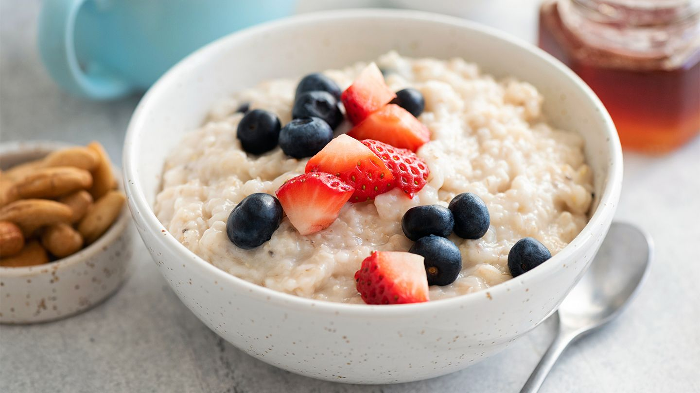

Oatmeal

Description
A simple fiber packed breakfast, that's easy to make.
Ingredients
- 1/2 cup Whole oats
- 1 1/2 cups water
- 1 tsp Honey
- 1 cup milk
Steps
- Put water in saucepan and set to high heat.
- When water begins to boil, add oats and reduce to medium heat.
- Simmer for five minutes.
- Remove from heat and let stand for five minutes.